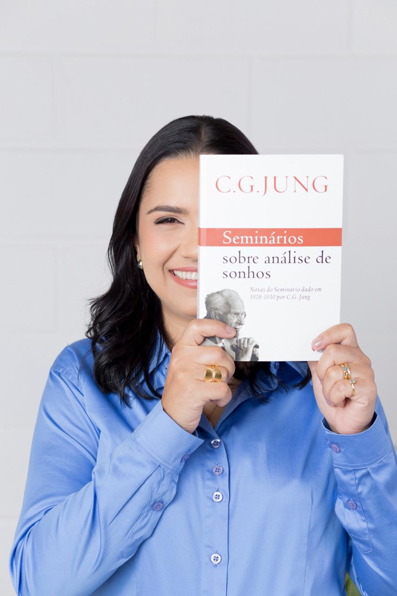

Um espaço seguro para cuidar de você!
Psicoterapia individual para adultos, Online para todo o Brasil.
Agendar uma conversa
Sobre mim
Sou Tâmara Mannis, psicóloga clínica com mais de 20 anos de experiência, graduada pela Universidade Federal de Sergipe e especialista em Psicologia Clínica.
Minha atuação é fundamentada na Psicologia Analítica Junguiana, com atendimento online individual, conjugal e familiar.
Tenho experiência no tratamento de ansiedade, depressão, pânico, bipolaridade, TDAH e questões relacionais. Ofereço um espaço de escuta qualificada, acolhimento e cuidado, buscando promover bem-estar e qualidade de vida.
CRP 07/46537
Especializações
• Especialização em Psicologia Conjugal e Familiar: Dedicada a mediar conflitos e fortalecer os vínculos afetivos e familiares.
• Formação em Psicologia Analítica Junguiana e Especialização em Teoria e Psicoterapia Analítica: Uma abordagem que olha para o indivíduo de forma integral, integrando os aspectos conscientes e inconscientes para promover o autoconhecimento profundo.
• Título de Especialista em Psicologia Clínica certificado pelo CRPRS.
Como posso ajudar
Atendimento para quem está passando por momentos como estes:
Ansiedade e estresse
Aprender a lidar com preocupação constante, cansaço e pensamentos acelerados.
Autoestima e autoconhecimento
Entender seus padrões e construir uma relação mais gentil com você mesma(o).
Relacionamentos e transições
Apoio em mudanças de carreira, términos, luto e novas fases da vida.
Como funciona
-
Conversa inicial
Você me conta o que a trouxe até aqui e tira suas dúvidas. Sem compromisso.
-
Primeira sessão
Começamos a entender sua história e definimos juntos os objetivos da terapia.
-
Acompanhamento semanal
Sessões de 60 minutos, por vídeo, no mesmo dia e horário.
Dúvidas frequentes
Atende online?
Sim. As sessões online acontecem por vídeo, com a mesma qualidade do atendimento presencial.
Aceita convênio?
Saúde Caixa.
Fundação ASSEFAZ.
Vamos conversar?
Dar o primeiro passo costuma ser a parte mais difícil. Me escreva e eu respondo em até 24 horas.
Chamar no WhatsApptamaramannis@gmail.com
Domicílio Fiscal - CNPJ: 15.282.321/0001-01
Rua Eng. Hernan Centurion, 540 - Jardins, Aracaju
@tamaramannispsicologa